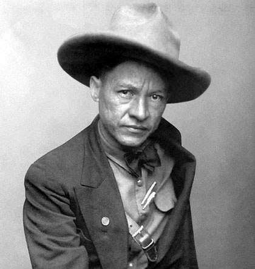
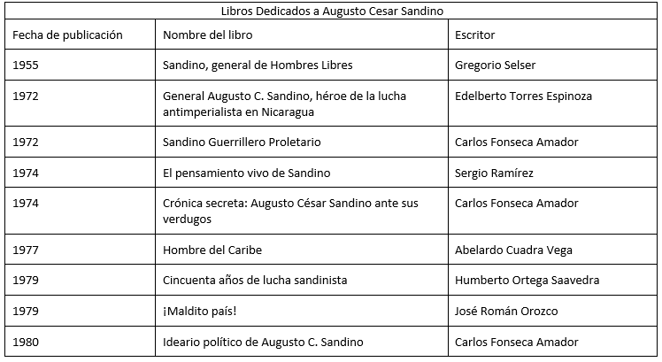
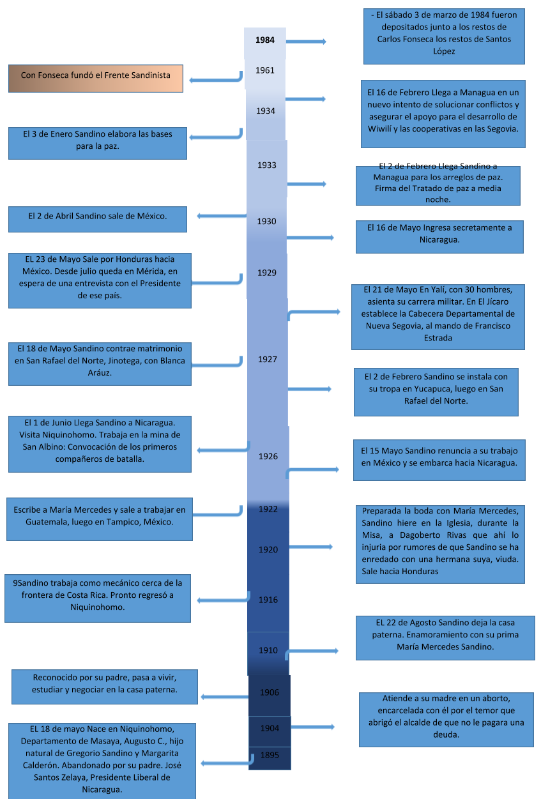

(Augusto Nicolás Calderón Sandino; Niquinohomo, Nicaragua, 1893 - Managua, 1934) Líder guerrillero
nicaragüense que luchó tenazmente contra la ocupación y la intervención norteamericana hasta obligar a los
Estados Unidos a retirar sus tropas de Nicaragua. Tras su asesinato a manos del entonces jefe de la Guardia
Nacional, Anastasio Somoza, Sandino se convirtió en el referente ideológico del Frente Sandinista de
Liberación Nacional (FSLN) y de la revolución promovida por este movimiento que, años más tarde, acabaría
con la dictadura somocista.

De origen muy humilde, Augusto Sandino trabajó como minero en Nicaragua, Honduras y México. En 1926 regresó
a su país, ocupado desde 1916 por las tropas estadounidenses que defendían los intereses de las compañías
fruteras de Estados Unidos. Optó por defender la autonomía nacional, afectada por el convenio
Bryan-Chamorro y por la firma del tratado Stimpson-Moncada, por lo que reunió un grupo de guerrilleros y se
alzó en armas.
Durante seis años Sandino combatió contra las tropas de diferentes gobiernos apoyados por Estados Unidos,
al término de los cuales había logrado aglutinar a su alrededor a unos tres mil hombres y se había ganado
la admiración popular. Organizada bajo su mando, la guerrilla rebelde se refugió en las selvas de Nueva
Segovia, donde se convirtió en prácticamente invencible.
Al no lograr derrotarlo, el presidente estadounidense Herbert C. Hoover ordenó la retirada de las tropas
desplegadas en Nicaragua, lo que, junto con la elección de Franklin D. Roosevelt como presidente de Estados
Unidos, movió a Sandino a negociar con el gobierno de nicaragüense la deposición de las armas y el retorno
a la vida civil (1933).
Sin embargo, su prestigio político continuaba siendo una amenaza para los dirigentes del país, por lo cual,
tras aceptar una invitación para acudir al palacio presidencial, fue emboscado y asesinado por Anastasio
Somoza, jefe de la Guardia Nacional y sobrino del ex presidente José María Moncada.
Con todo, la muerte del líder no significó la desaparición de su movimiento, y su nombre pasó a encarnar la
lucha de liberación de Nicaragua. El Frente Sandinista de Liberación Nacional (FSLN), alineación política
creada en 1962, se constituyó como continuadora del ideario de Sandino y centró sus miras en el
derrocamiento de los Somoza mediante la lucha armada, objetivo que lograría muchos años después (en 1979)
al forzar la caída del presidente Anastasio Somoza Debayle, hijo de Anastasio Somoza.

Flor de Pino
"Esta Flor de Pino que corte para ti es la de este joven
Vecino de Quilali tiene la fragancia de una indita de
acá flor de Jaraguasca que jamás morirá al pasar por
Sacacli chi chi te preguntaran por mí, les dirás que
me fui lejos pero un dia volveré porque no me hallo sin ti,
al pasar por Sacacli chi chi te preguntaran por mí,
les dirás que me fui lejos p q no me hallo sin ti.
Esta Flor de Pino que entre brumas nació es la que
Sandino con sus manos corto a la muchachita que escogió
para el, la telegrafista flor de San Rafael
CORO
Al pasar por Sacacli chi chi te preguntaran por mí, les
dirás que me fui lejos pero un dia volveré porque no me
hallo sin ti, al pasar por Sacacli chi chi te preguntaran por mí,
les diras que me fui lejos p q no me hallo sin ti."

Blanca, simpatizo de
inmediato con el joven
militar de casi 32 años,
colaboró con su causa
política y decidió unirse en
matrimonio con él cuando
cumplía esa edad. Dos
certificados se conocen de la
ceremonia eclesiástica.
Su matrimonio se oficializo
En la parroquia de San
Rafael del Norte, a
diecinueve de mayo de mil
novecientos veintisiete
A la media noche del primero
de junio de 1933, a sus 24
años, dio a luz a su hija, un
parto complicado que le
costó la vida. Nació la bebé
pero la placenta no salió. El
General dijo a la madre,
¡sálvela!, pero doña Blanca
dijo salve a la niña y el
médico cortó el cordón
umbilical salvar a la niña.
Desde muy temprana edad
se vio obligada a huir de
lugar en lugar, por la
constante persecución a que
era sometida toda su familia.
A pesar del entorno adverso,
aprende a muy temprana
edad de siete años el oficio
de telegrafista. Se casa a la
edad de 18 años.
No tuvo la oportunidad de
conocerlo, porque al igual
que su madre, Blanca Estela
Arauz, Sandino murió
cuando ella era muy niña,
guarda con cariño en su
memoria la imagen de su
padre forjada por los relatos
por sus familiares.